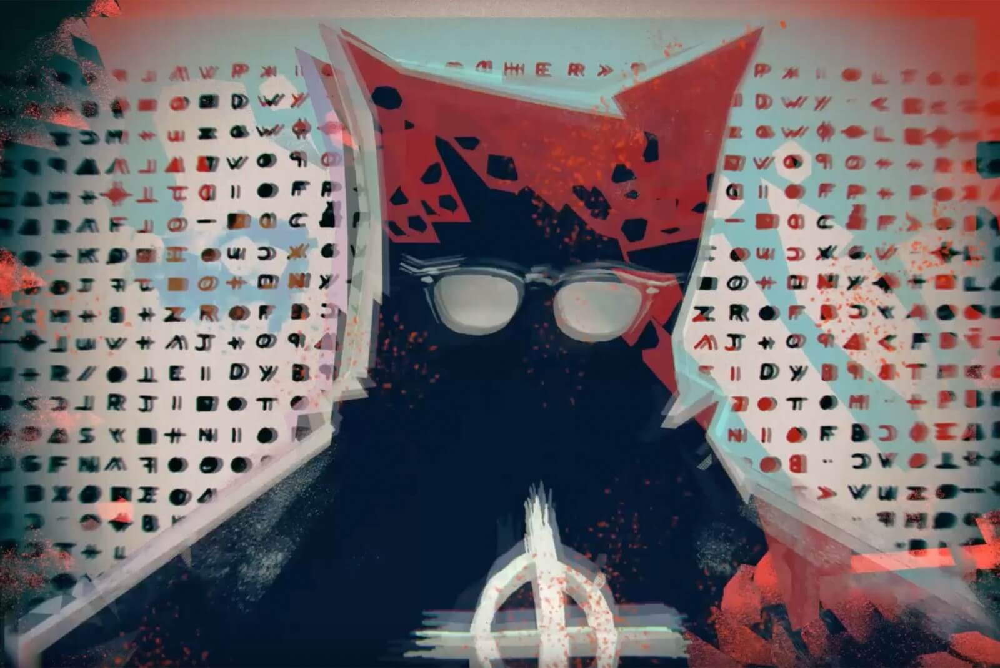

El asesino del Zodiaco fue un asesino en serie que acechó el norte de California (Estados Unidos) entre diciembre de 1968 y octubre de 1969. En una carta, presuntamente suya, confesó el asesinato de 37 víctimas, aunque las únicas confirmadas fueron diez
hombres y tres mujeres. De las mismas, solo dos sobrevivieron para dar pruebas sobre la identidad del asesino, aún desconocida. Se estimó que el Zodíaco —así era como él mismo se denominaba— tendría entre 40 y 50 años en el momento de sus
crímenes; que era blanco, corpulento, de pelo castaño, que tenía conocimiento sobre lenguajes cifrados y poseía una gran inteligencia. El Zodíaco atacó a las siete víctimas conocidas en Benicia, Vallejo, el lago Berryessa y San Francisco entre
diciembre de 1968 y octubre de 1969. Las víctimas fueron cuatro hombres y tres mujeres de edades entre los 16 y 29 años. A finales de 2003 tuvo lugar un impactante descubrimiento: las huellas de la famosa carta del Zodiaco no coincidían con
las huellas de Arthur Leigh Allen, el sospechoso principal del caso, aunque todas las pistas indicaban que era él. La identidad del asesino sigue siendo una incógnita. El Departamento de Policía de San Francisco declaró la investigación «inactiva»
en abril de 2004, pero reabrió el caso en marzo de 2007. En 2021, la policía estableció A Gary Francis Poste como un posible sospechoso, quien falleció en 2018.
Víctimas
Aunque el Zodiaco afirmó en sus cartas enviadas a los diarios que había asesinado a 37 personas, los investigadores le acreditaron solamente siete víctimas confirmadas; algunos de sus nombres a continuación: David Arthur Faraday (17 años) y Betty Lou
Jensen (16 años) fueron asesinados por un arma de fuego el 20 de diciembre de 1968 en el camino al Lago Herman, en las cercanías de los límites de la ciudad de Benicia. Michael Renault Mageau (19 años) y Darlene Elizabeth Ferrin (22 años),
acribillados el 4 de julio de 1969 en el aparcamiento del campo de golf Blue Rocks Springs, a las afueras de Vallejo. Darlene murió recibiendo primeros auxilios en el Hospital Kaiser Foundation, mientras que Michael sobrevivió. Bryan Calvin
Hartnell (20 años) y Cecilia Ann Shepard (22 años), apuñalados el 27 de septiembre de 1969 en lo que en la actualidad es denominada la isla del Zodiaco, en el Lago Berryessa, ubicado en el condado de Napa. Bryan sobrevivió a seis puñaladas
en la espalda, pero Cecilia murió a causa de sus heridas dos días después en el Hospital Queen of Valley, en Napa. Paul Lee Stine (29 años), taxista, muerto por arma de fuego en su propio taxi el 11 de octubre de 1969 en el barrio de Presidio
Heights (San Francisco). En la escena del crimen no aparecieron ni la cartera ni las llaves del vehículo. Posibles víctimas Otras personas han sido identificadas como víctimas potenciales del Zodiaco, aunque las pruebas no son concluyentes
y no todas son aceptadas como víctimas de este asesino: Robert Domingos (19 años) y Linda Edwards (17 años) fueron asesinados por arma de fuego el 4 de junio de 1963 en una playa cercana a Lompoc (California). Edwards y Domingos fueron considerados
posibles víctimas debido a las similitudes de su ataque con el de Lake Herman Road. Cheri Jo Bates (18 años), muerta por arma blanca —casi decapitada— el 30 de octubre de 1966 en Riverside Community College en Riverside (California). La posible
conexión de la muerte de Bates con el asesino del Zodiaco se dio 4 años después, a partir de información recibida por el reportero Paul Avery del San Francisco Chronicle, sugiriendo ciertas similitudes entre los asesinatos cometidos por el
Zodiaco y las circunstancias que rodearon a la muerte de Bates. Kathleen Johns (22 años) dijo ser secuestrada, junto a su bebé, el 22 de marzo de 1970 en la carretera 132, al oeste de Modesto (California). En su declaración comentó que el
conductor de un coche le hizo señas con las luces para que parara y así lo hizo. Una vez fuera del coche, él le explicó que había visto que la llanta del coche de Johns estaba floja y, tras arreglarla, él se metió en su coche para continuar
con su camino y ella hizo lo mismo. Más adelante, la llanta se sale y, supuestamente, el mismo hombre se ofrece a llevarle hasta la gasolinera más cercana. Ella acepta y vuelve a su coche para recoger a su bebé, a lo que el hombre se extraña
de que tenga una hija. "¿Tiene algún problema por ello?" dijo ella. "No. De hecho, mientras más, mejor", contestó él. El coche arranca y pasa por delante de la primera gasolinera, pero no frena y continúa. Incluso él le pide que arroje a su
hija por la ventana. Ella consigue escapar junto con su hija y se dirige a la estación de policía ubicada en Patterson, donde casualmente ella ve el retrato robot del Zodiaco y dice que ha sido ese hombre el que la retuvo durante unas tres
horas. Donna Lass (25 años) fue vista por última vez el 26 de septiembre de 1970 en South Lake Tahoe (California). Una postal con la dirección de Condominios Forrest Pines anotada al reverso fue recibida en el Chronicle el 22 de marzo de 1971.
Fue interpretada por algunos como una afirmación del Zodiaco de llevar 13 víctimas: Lass debería haber sido la decimocuarta y no la que indicaba la postal. Por lo cual no fue relacionada concluyentemente con el asesino, el cuerpo de la mujer
no fue encontrado y no se llevó a cabo una investigación oficial, debido a desacuerdos de tipo jurisdiccional entre la policía de South Lake Tahoe y la oficina del sheriff. Al día de hoy no se sabe si el crimen fue cometido ni donde está Donna
Lass.
Camino al Lago Herman
El asesino del Zodiaco atrajo la atención de la policía por el «aparente» asesinato aleatorio de Betty Lou Jensen y David Faraday el 20 de diciembre de 1968 en los límites de la ciudad de Benicia (California). La pareja celebraba su primera cita y entre
sus planes pensaban asistir a un concierto navideño en Hogan High, a unas cuantas manzanas de la casa de ella. En lugar de ir directamente decidieron visitar a un amigo y detenerse en un restaurante. Sobre las 22:00 horas la pareja estacionó
en un cruce del camino al Lago Herman. Justo en ese momento el Zodiaco se incorporó al cruce y se estacionó al lado de ellos. Un testigo presencial pasó por allí tiempo después y vio dos coches —uno de ellos el de la pareja— vacíos. Momentos
después escuchó lo que le pareció un disparo, pero no estaba seguro al tener la radio encendida. El Zodiaco disparó en contra de Faraday solo una vez a la cabeza y cinco veces a la espalda de Jensen, quien intentó huir. Sus cuerpos fueron
encontrados minutos después por Stella Borges, quien vivía cerca de ahí. Dio aviso al capitán Daniel Pitta y al oficial William T. Warner. El detective y sargento Les Lundblad, de la oficina del sheriff del condado de Solano, investigó el
crimen, pero no se encontraron pistas sólidas.
Blue Rock Springs
Michael Magueau y Darlene Ferrin fueron atacados con un arma de fuego en la madrugada del 4 de julio de 1969, en el aparcamiento del campo de golf Blue Rock Springs, en Vallejo (California). Se encontraban a poco más de 6 km de distancia del anterior
asesinato. La pareja estaba en el coche de ella cuando a su lado aparcó otro coche, cuyo conductor se fue para volver 10 minutos después. Una vez aparcado detrás de ellos, para evitar que se escaparan, el Zodiaco se acercó al coche y les alumbró
directamente a la cara para cegarlos. Entonces disparó con una Luger 9 mm. A las 0:40 del 5 de julio de 1969 una llamada anónima —efectuada por un hombre— informó al Departamento de Policía de Vallejo lo sucedido. Y no solo eso: confesó que
él lo había hecho y que era el asesino de Jensen y Faraday, asesinados hacía 6 meses. La policía rastreó la llamada, proveniente de un teléfono público de una estación de servicio entre las calles Springs y Toulomne. Zodiaco estaba a menos
de un kilómetro de la casa de Ferrin y a pocas calles de la oficina del sheriff. Ella fue declarada muerta en el hospital. Él sobrevivió al ataque, a pesar de haber recibido disparos en el rostro, el cuello y el pecho. Los detectives John
Lynch y Ed Rust, del Departamento de Policía de Vallejo, investigaron el crimen. Fue el detective Jack Mulanax quien retomó el caso en los años 70. En el libro Zodiaco, escrito por Robert Graysmith y publicado diecisiete años después del crimen,
se dice que el asesino era un cliente habitual de Terry's Waffle House, donde Ferrin era camarera. Zodiaco, admirador de la joven, podría haberle confesado los dos primeros asesinatos y luego, arrepentido por temor a ser denunciado, la mató.
O tal vez lo hizo porque ella le estaba chantajeando. Los argumentos parecen carecer de fundamento, a pesar de ser el argumento de la obra The Zodiac Killer (1971) y del libro del mismo nombre (1979), de Jerry Weissman, así como de una historieta
publicada en el Chronicle por Bill Wallace. Criticando la teoría esgrimida por Robert Graysmith se ha indicado: De acuerdo con Graysmith la víctima en cuestión, Darlene Ferrin, se comprometió en una intensa discusión con un extraño misterioso.
Graysmith cree que es un hombre identificado sólo como 'Lee' el apodo más frecuentemente usado por Arthur Leigh Allen. Según dicho autor, la persecución en coche por Blue Rock Springs terminó cuando el desconocido se acercó al vehículo de
Ferrin y procedió a abrir fuego contra las víctimas. El compañero de Ferrin vivió para contar una historia muy diferente y los informes originales de la policía refutan muy eficazmente esta versión de los hechos
Comienzan las cartas de Zodiaco
El 1 de agosto de 1969, tres cartas escritas por el asesino llegaron a las redacciones del Vallejo Times Herald, el San Francisco Chronicle y el San Francisco Examiner. En ellas, casi idénticas entre sí, reconocía los tres crímenes e incluía un criptograma
de 408 caracteres que desvelaba su identidad. El asesino fue muy claro: o las cartas se publicaban en primera plana o ese mismo fin de semana mataría a doce personas. Los asesinatos, por suerte, no se llevaron a cabo, pero las cartas pudieron
leerse en la primera plana de los periódicos. Conforme se observó al respecto: «Aquella amenaza conformaría únicamente la primera muestra dentro de una sucesión de alardes y chapuzas que, en el marco de un perverso juego del gato y el ratón,
la vanidad del psicópata emprendió, aún a riesgo de dejar indicios aptos para conducir finalmente a su arresto».Tres días más tarde, otra carta llegó a la redacción del San Francisco Examiner. «Querido editor, éste es el Zodiaco» era el inicio
de una carta escrita en respuesta al jefe Stiltz de Vallejo, el cual pidió más detalles para probar que era el asesino de Faraday, Jensen y Ferrin. El 8 de agosto de 1969, una semana después de que se recibiera el criptograma, Donald y Bettye
Harden, un matrimonio de Salinas (California), descifraron el criptograma de 408 símbolos. Contenía un mensaje mal escrito en el que el asesino parecía hacer referencia al cuento El juego más peligroso. También dijo que estaba recolectando
esclavos para el más allá. No aparecía ningún nombre en el texto decodificado, y el asesino dijo que no revelaría su identidad porque ralentizaría o detendría su colección de esclavos. Las cartas enviadas por el criminal conformaron el inicio
de la lucha mediática que este mantendría con las autoridades y con la prensa: «...El remitente exigía que los comunicados fueran impresos en la primera plana de los respectivos periódicos, y amenazaba con que, en caso contrario, se vería
en la obligación moral de tener que asesinar a una docena de personas escogidas por las calles al azar ese mismo fin de semana. Por fortuna nunca se llevaron a efecto los anunciados crímenes...»
Lago Berryesa
El 27 de septiembre de 1969, Bryan Hartnell y Cecilia Shepard se encontraban merendando a las orillas del Lago Berryessa, en una pequeña isla conectada por una vereda arenosa a Twin Oak Ridge. Un hombre se les acercó, tras esconderse detrás de un árbol
sin que Cecilia pudiera cerciorarse de su presencia, usando una capucha de verdugo negra con gafas de sol sobre los agujeros de los ojos y una especie de babero colocado en el pecho con un símbolo de apariencia reticular de unos 7.5cm X 7.5
cm de área. Se aproximó a ellos con una pistola en la mano, Hartnell cree que se trataba de una .45. El encapuchado afirmó ser un convicto fugitivo de una cárcel de Deer Lodge (Montana), en donde dijo haber matado a un guardia y también robado
un coche, y les explicó que necesitaba su vehículo para huir a México. Traía consigo unas cuerdas de plástico para tender la ropa, previamente cortadas, y le pidió a Shepard amarrar a Hartnell antes de ser atada ella misma. El atracador revisó
los nudos de Hartnell y los apretó tras descubrir que ella los había dejado flojos. Hartnell creyó que se trataba de un robo raro, pero el hombre sacó un cuchillo y los apuñaló a ambos. Entonces recorrió los 500 metros hasta Knoxville Road
y dibujó el símbolo reticular en la puerta del auto de Hartnell y al lado escribió: «Vallejo/12-20-68/7-4-69/Sept 27-69-6:30/by knife». A las 7:40pm, el hombre llamó a la oficina de la mujer encargada del condado de Napa desde un teléfono
público para denunciar su crimen. El teléfono fue encontrado aún descolgado minutos después en el Servicio de Lavado de autos Napa en Main Street, por el reportero de Radio KVON Pat Stanley, solo a unas manzanas de la oficina del sheriff y
a 40 kilómetros de la escena del crimen. Los detectives fueron capaces de tomar huellas dactilares aún frescas del teléfono, pero no lograron hacerlas coincidir con las de ningún sospechoso. Un hombre y su hijo que se encontraban pescando
en una ensenada próxima descubrieron a las víctimas al escuchar sus gritos pidiendo ayuda, la cual fue suministrada por unos rangers (policías forestales) del condado de Napa. Dave Collins y Ray Land fueron los primeros representantes de la
ley en llegar a la escena del crimen. Ambos oficiales se encontraban a corta distancia del sitio. Collins se encontraba en su coche patrulla en el área de Vichy Springs (California), a casi treinta kilómetros de allí, mientras que Land se
encontraba en Santa Helena (California). Cecilia Shepard estaba aún consciente cuando Collins llegó, por lo que le proporcionó una descripción del atacante. Hartnell y Shepard fueron trasladados en ambulancia al Hospital Queen Valley ubicado
en Napa. Shepard entró en coma durante el trayecto al hospital y nunca recuperó la consciencia, muriendo dos días después, pero Hartnell sobrevivió para contar su historia a la prensa. El detective y sheriff del condado Ken Narlow, quien estaba
asignado al caso desde el inicio, trabajó intentando resolver el crimen hasta su retiro del departamento de policía en 1987.
Presidio Heights
El 11 de octubre de 1969 un hombre abordó el taxi de Paul Stine en el cruce de las calles Mason y Geary en San Francisco y le pidió que lo llevara a las calles Washington y Maple de la comunidad vecindaria de Presidio Heights. Por razones desconocidas,
Stine fue hasta una calle más adelante, llamada Cherry, donde el hombre le disparó a la cabeza con un arma calibre 9 mm, entonces agarró las llaves de su auto y su cartera y le quitó la camisa. Fue visto por tres adolescentes que estaban del
otro lado de la calle a las 9:55 p. m., quienes llamaron a la policía mientras el crimen se desarrollaba. Los jóvenes observaron al hombre limpiando el taxi y después caminando una manzana hacia el norte. La policía llegó minutos después,
y los jóvenes testificaron explicando que el asesino aún se encontraba cerca. Dos manzanas adelante de la escena del crimen el oficial Don Fouke, quien también había respondido a la llamada de auxilio, observó a un hombre blanco caminando
por la acera y que después subía una escalera que conducía a una casa ubicada en el lado norte de la calle, el encuentro duró solamente cinco o quizá diez segundos. Su compañero, Eric Zelms, no vio al hombre. La radio les alertó para buscar
a un sospechoso de piel negra y no un individuo caucásico, así que no tuvieron motivo para detener al hombre y pasaron al lado de él sin detenerse. La confusión en las descripciones ha permanecido sin explicación hasta la fecha. Cuando llegaron
a la calle Cherry, Fouke fue informado de que estaban en efecto buscando a un sospechoso blanco; allí se dio cuenta de que habían pasado al lado del asesino y concluyó que el Zodiaco había retomado su ruta original y había escapado hacia donde
se encuentra Fuerte Presidio. Se dieron a la tarea de buscarlo, pero el asesino desapareció. La búsqueda continuó, pero no se encontró nada. Los tres adolescentes testigos trabajaron con un criminalista para elaborar un retrato robot del asesino
de Stine, y a los pocos días regresaron para la elaboración de un segundo retrato hablado. La edad del Zodiaco fue estimada entre 35 o 45 años de edad. Los detectives Bill Armstrong y Dave Toschi fueron asignados al caso. El Departamento de
Policía de San Francisco al final investigó y estimó por lo menos a 2500 sospechosos en un periodo de varios años. El 14 de octubre de 1969, el Chronicle recibió una carta más del Zodiaco, esta vez conteniendo una muestra de la camisa de Paul
Stine, como prueba de que él era el asesino, y también contenía una amenaza de que dispararía en una escuela para niños. Fue entonces cuando la policía supo que era a quien habían estado buscando algunas noches antes en Presidio Heights. A
las 2:00 a. m. del 20 de octubre de 1969 alguien afirmó que el Zodiaco había llamado al Departamento de Policía de Oakland exigiendo que uno de dos prominentes abogados, F. Lee Bailey o Melvin Belli, apareciesen en el show televisivo de mesa
de exposiciones de Jim Dunbar por la mañana. Bailey no pudo asistir, pero Belli se presentó en el programa. Dunbar pidió a los telespectadores mantener las líneas telefónicas abiertas, y entonces alguien afirmando ser el Zodiaco llamó varias
veces y dijo que su nombre era Sam. Belli aceptó encontrarse con él en Daly City, pero el sospechoso nunca apareció. Los oficiales de policía que anteriormente habían escuchado al Zodiaco escucharon la voz de "Sam" y concluyeron que él no
era el Zodiaco. Llamadas subsecuentes que el sospechoso hizo a Belli fueron rastreadas y provenían del Hospital Estatal de Napa, en donde se supo que "Sam" era un enfermo mental. El 8 de noviembre de 1969 el Zodiaco envió otra misiva con un
criptograma consistente en 340 caracteres. El 9 de noviembre del mismo año, envió otra carta de siete páginas en la cual aseguraba que dos policías lo detuvieron y hablaron con él por espacio de tres minutos, después de haber disparado en
contra de Stine. Extractos de la carta fueron publicados en el Chronicle el 12 de noviembre siguiente, incluyendo la declaración del Zodiaco; ese mismo día, Don Fouke escribió un memorándum explicando lo que había sucedido esa noche. Muchas
soluciones posibles fueron sugeridas, pero no fueron aceptadas ya que se alejaban de las convenciones de codificado. Finalmente, el 5 de diciembre de 2020 (51 años después), los 340 caracteres fueron descifrados por un grupo de aficionados.
Modesto
Durante la noche del 22 de marzo de 1970, Kathleen Johns iba en su auto de San Bernardino a Petaluma (California) para visitar a su madre. Embarazada de siete meses, llevaba al lado a su hija de 10 meses de edad. Mientras se dirigía hacia la carretera
132 cerca de Modesto (California), un auto detrás de ella comenzó a tocar el claxon y a encender y apagar las luces; ella abandonó el camino y se detuvo. El hombre del auto también se detuvo detrás de ella, comentándole que su neumático derecho
trasero se estaba tambaleando, y se ofreció para apretar las tuercas. Después de terminar la maniobra, el hombre se alejó y cuando Johns inició la marcha, la llanta se desprendió del auto. El hombre se detuvo, retrocedió y se ofreció para
conducirlas a la próxima gasolinera por ayuda. Ella y su hija subieron al auto. Pasaron cerca de varias estaciones de servicio pero el hombre no se detuvo. Durante tres horas aproximadamente las llevó por distintos sitios por las calles de
Tracy, y cuando ella le preguntó por qué no se detenía, eludió la respuesta. Cuando el hombre se detuvo en una intersección, Johns saltó del auto junto con su hija y se ocultaron en un campo. El individuo salió del auto para buscarlas, pero
cuando un camionero llegó a la escena el secuestrador de Johns escapó. Johns pidió ayuda para viajar a la estación de policía ubicada en Patterson (California). Mientras presentaba su denuncia al sargento de servicio, advirtió la presencia
del retrato robot del asesino de Paul Stine y lo reconoció como el secuestrador de ella y su hija. El oficial mantuvo bajo custodia a Johns en el restaurante Mil's en la oscuridad. Su auto fue hallado incendiado y destrozado. Hay muchas inconsistencias
en el secuestro de Johns; las afirmaciones de que el individuo había amenazado con matarlas mientras manejaba son discutidas al menos por un informe policial. Johns contó su historia a Paul Avery del Chronicle, indicando que su secuestrador
abandonó el auto y las buscó en la oscuridad con una linterna; sin embargo en los dos testimonios que dio a la policía aseguró que el hombre no se bajó del vehículo. Algunos testimonios mencionan que el vehículo de Johns fue movido e incendiado
posteriormente, mientras que otros, contrarios, afirman que el auto permaneció en donde Johns lo había dejado. Las diversas discrepancias entre las versiones de Johns han llevado a los investigadores a cuestionar si ella efectivamente fue
una víctima del Zodiaco.
Comunicados adicionales
El Zodiaco continuó comunicándose con las autoridades el resto del año 1970 a través de cartas y tarjetas postales dirigidas a la prensa. En una carta fechada el 20 de abril de 1970, el Zodiaco escribió, «Mi nombre es [____]» seguido de 13 caracteres
cifrados.El Zodiaco indicó que él no era responsable del reciente ataque con una bomba a la estación de Policía de San Francisco (refiriéndose a la muerte del sargento Brian McDonnell en Park Station en el Golden Gate Park,acaecida el 18 de
febrero de 1970) pero añadió: «Hay más gloria en matar a un policía que a un cid [sic] porque un policía puede disparar en respuesta». La carta incluía el diagrama de una bomba que el Zodiaco afirmaba usaría para volar un autobús escolar.
Al reverso del diagrama, escribió: «Zodiac-logo.jpg = 10, SFPD (Departamento de Policía de San Francisco) = 0». Zodiaco envió una tarjeta de felicitación sellada el 28 de abril de 1970 dirigida al Chronicle. El texto escrito en la carta decía:
«Espero que ustedes gocen cuando tenga mi EXPLOSIÓN» seguido por la firma del círculo cruzado del Zodiaco. Al reverso de la carta, amenazó con usar su bomba en un autobús muy pronto, a menos de que el diario publicara detalladamente sus escritos.
También deseaba ver a la gente comenzando a usar "algunos agradables botones Zodiaco". En la misma carta escribió: «Le disparé a un hombre en un auto estacionado con una 38 mm.»Se ha propuesto que Zodiaco se refería al asesinato del Sargento
Richard Radetich ocurrido una semana antes, el 19 de junio a las 5:25 a. m. Radetich se encontraba levantando una multa de estacionamiento en su patrulla cuando un asaltante le disparó en la cabeza con una pistola calibre .38. Radetich falleció
15 horas después. El departamento de policía de San Francisco negó que el Zodiaco estuviese involucrado con el asesinato; el crimen permanece sin resolver.Incluido con la carta, estaba un mapa de la Bahía de San Francisco distribuido por la
compañía Phillip 66. En la imagen del Monte Diablo, el Zodiaco dibujó un círculo cruzado similar al que incluía en sus cartas previas. En la parte superior del símbolo reticular colocó el número cero, luego un tres, un seis y un nueve, por
lo que la anotación parecía más bien la carátula de un reloj. Las instrucciones adjuntas señalaban que el cero «está para fijar la Magnitud Norte». La carta también incluía 32 letras cifradas que el asesino afirmó deberían estar en conjunción
con el código, que conduciría a la localización de una bomba que él había enterrado y que estallaría en el otoño. Las letras cifradas nunca llegaron a descodificarse, y la supuesta bomba jamás fue hallada. El asesino firmó la nota con «Zodiac-logo.jpg
= 12, SFPD = 0».En una misiva enviada al Chronicle sellada el 24 de julio de 1970 el Zodiaco se adjudicó el secuestro de Kathleen Johns, cuatro meses después del incidente.En su carta del 26 de julio de 1970, el Zodiaco parafraseó una canción
de El Mikado, añadiéndole su propia letra acerca de hacer una "pequeña lista" de las maneras en que planeaba torturar a sus «esclavos» en el «paraíso». La carta fue firmada con un exageradamente enorme símbolo del círculo cruzado y una nueva
puntuación: «Zodiac-logo.jpg = 13, SFPD = 0».Una nota final al reverso de la carta indicaba "P.D. El código de Mt. Diablo refiere Radianes + # pulgadas por radianes".En un examen detallado del «indicio radián» el investigador Gareth Penn condujo
al descubrimiento de un ángulo radián que siguiendo las instrucciones del Zodiaco al colocarlo sobre el mapa apuntaba a dos sitios en los que Zodiaco había atacado.El 7 de octubre de 1970, el Chronicle recibió una tarjeta de 3 5 pulgadas firmada
con el símbolo del Zodiaco Zodiac Killer symbol.svg y una pequeña cruz supuestamente dibujada con sangre. El mensaje en la tarjeta estaba formado por palabras y letras pegadas de una edición del Chronicle, y fueron perforados trece agujeros
en la tarjeta. Los inspectores Armstrong y Toschi acordaron que era "altamente probable" que el remitente de la tarjeta fuera el Zodiaco.
Riverside
El 27 de octubre de 1970, el reportero del Chronicle Paul Avery, que había estado cubriendo el caso del Zodiaco, recibió una postal de Halloween firmada con una letra Z y el símbolo reticular. Escrito a mano al reverso de la tarjeta se encontró la anotación:
«Peek-a-boo, estás condenado». La amenaza fue tomada seriamente y la historia recibió primera plana en el Chronicle. Poco después Avery recibió una carta anónima alertándolo de las similitudes entre las actividades del Zodiaco y el caso irresuelto
de Cheri Jo Bates, ocurrido cuatro años antes en el colegio de Riverside, en el área del Gran Los Ángeles, a más de 400 millas al sur de San Francisco. Paul reportó sus hallazgos en el Chronicle el 16 de noviembre de 1970. El 30 de octubre
de 1966, Bates pasaba la tarde en el anexo de la biblioteca del campus hasta que se cerró a las 9 p. m. Vecinos informaron que escucharon un grito cerca de las 10:30 p. m. Bates fue encontrada muerta al día siguiente a corta distancia de la
biblioteca, entre dos casas abandonadas en proceso de demolición debido a la renovación de instalaciones del campus. Los cables del distribuidor de su Volkswagen habían sido desconectados. Fue brutalmente golpeada y acuchillada hasta matarla.
Un reloj de pulsera de hombre de la marca Timex con la correa rota fue hallado cerca. El reloj se había detenido a las 12:24, pero se cree que el ataque ocurrió mucho antes. También se descubrieron huellas de calzado de tipo militar. Un mes
después, el 29 de noviembre de 1966, cartas escritas a máquina casi idénticas fueron enviadas a la Policía de Riverside y a la Riverside Press-Enterprise tituladas "La confesión". En ellas, el autor aseguraba ser responsable del asesinato
de Bates, proporcionando detalles del crimen no revelados al público, y advertía que Bates «no es la primera y no será la última». En diciembre de 1966, fue descubierto un poema tallado en la parte inferior de un escritorio de la biblioteca
del colegio de Riverside titulado «Enfermo de vivir/indispuesto para morir». El lenguaje del poema y la escritura se parecía a la de las cartas del Zodiaco. Fue firmado con lo que serían las iniciales rh. Sherwood Morril, analista de los documentos
en cuestión, opinó que el poema había sido escrito por el Zodiaco. El 30 de abril de 1967, exactamente seis meses después del homicidio de Bates, tanto el padre de Cheri, Joseph, como el diario Press-Enterprise y la policía de Riverside, recibieron
cartas casi idénticas. Garabateado a mano, el texto de las copias enviadas al Press-Enterprise y a la Policía decía: «Bates tenía que morir, habrá más», con un pequeño garabato que parecía la letra Z. La copia enviada a Joseph Bates decía:
«Ella tenía que morir, habrá más», esta vez sin la firma de la Z. El 13 de marzo de 1971, casi cuatro meses después de haber sido publicado —por Paul Avery— el primer artículo sobre Bates, el Zodiaco envió una carta al diario Los Angeles Times,
en la cual otorgaba el mérito a la policía en lugar de Avery por el descubrimiento de su «actividad en Riverside, pero sólo están encontrando los fáciles, hay una cantidad terriblemente mayor detrás». La conexión entre Cheri Jo Bates, de Riverside,
y el Zodiaco es incierta. El Departamento de Policía de Riverside sostiene que el homicidio de Bates no fue cometido por el Zodiaco, pero conceden autenticidad a algunas cartas que posiblemente son obra suya clamando un crédito falsamente
adjudicado.
Lago Tahoe

El 22 de marzo de 1971, una presunta postal del Zodiaco, dirigida a Paul Avery, fue enviada al Chronicle. En ella aparentemente se adjudicaba la desaparición de Donna Lass, ocurrida en South Lake Tahoe (California), el 26 de septiembre de 1970. Confeccionada
de un collage de anuncios y de letras de revista representó una escena de un bosque de pinos y el texto «Sierra Club / buscando víctima 12 / La mirada por los pinos / paso áreas de Lake Tahoe / alrededor en la nieve». El símbolo del zodíaco,
el círculo cruzado, estaba en el espacio para la dirección del remitente.Lass era una enfermera en el hotel y casino Sahara Tahoe. El 26 de septiembre trabajó hasta las 2:00 a. m., habiendo tratado a su último paciente a la 1:40 a. m., y no
se le vio abandonar su oficina. A la mañana siguiente, su uniforme de trabajo y sus zapatos fueron encontrados en una bolsa de papel en su oficina, inexplicablemente sucios de tierra. Su coche fue hallado en el complejo de apartamentos y el
piso donde vivía estaba limpio. Después de ese día, tanto su jefe como su arrendador recibieron llamadas telefónicas de un desconocido quien afirmó falsamente que Lass había tenido que dejar la ciudad debido a una emergencia familiar. La policía
y los sheriffs locales inicialmente trataron la desaparición de Lass como un simple caso de investigación de persona desaparecida, sospechando que simplemente se había marchado. Lass nunca fue hallada. Lo que parecía que era una tumba fue
descubierta cerca del Claire Tappan Lodge en Norden (California), en terrenos del Sierra Club, pero al excavarla solo se encontró un par de anteojos de sol.
Santa Bárbara
En una historia aparecida en el Vallejo Times Herald el 13 de noviembre de 1972, el sheriff y detective Bill Barker teorizó que el asesinato de una joven pareja perpetrado en el condado de Santa Bárbara habría sido obra del Zodiaco. El 4 de junio de 1963
(cinco años y medio antes del primer asesinato conocido del Zodiaco, perpetrado en el camino al Lago Herman), el estudiante de preparatoria Robert Domingos y su novia Linda Edwards fueron tiroteados en una playa cercana a Lompoc (California).
Los jóvenes se habían ausentado de la escuela ese día debido a una tradición entre los estudiantes estadounidenses llamada Senior Ditch Day. La policía creyó que el agresor había intentado atar a las víctimas, pero cuando lograron liberarse
para huir, el individuo les disparó en varias ocasiones en la espalda y el pecho con un arma calibre 22. Entonces colocó los cuerpos en una pequeña cabaña e intentó infructuosamente incendiarla. Algunos creen que los asesinatos de Domingos
y Edwards son obra del Zodiaco a partir de las similitudes entre este caso y el ataque del asesino efectuado en el Lago Berryessa.Después de la postal de los «Pinos», el Zodiaco permaneció en silencio aproximadamente tres años, tras los cuales
el Chronicle recibió una carta del Zodiaco sellada el 29 de enero de 1974, elogiando la película El exorcista como «la mejor comedia satírica que había visto». La carta incluía un verso de El Mikado, y un símbolo en el fondo que aún no ha
sido explicado por los investigadores. El Zodiaco concluye la carta con un nuevo «marcador»: «Me (Yo) = 37, SFPD = 0».El Chronicle recibió otra carta sellada el 14 de febrero de 1974, informando al editor que las iniciales para el Ejército
Simbionés de Liberación deletreadas en nórdico antiguo significaban "mata". Sin embargo, el manuscrito no fue autentificado como del Zodiaco. Otra carta recibida en el Chronicle, sellada el 8 de mayo de 1974, presentaba una queja de que el
film Badlands era una «glorificación del asesinato» y pedía al diario retirar la publicidad de la película, firmando solamente "Un ciudadano". La letra, el tono, y la ironía superficial son similares a las comunicaciones previas de Zodiaco.
El Chronicle recibió una carta anónima sellada el 8 de julio de 1974, quejándose de uno de sus columnistas, Marco Spinelli. La carta fue firmada por «el fantasma rojo (rojo, con rabia)». La autoría de Zodiaco es aún debatida.Otros cuatro años
pasaron sin comunicación —supuesta o verificada— del Zodiaco. Una misiva del 24 de abril de 1978 inicialmente fue dada por auténtica, pero declarada una farsa por otros tres expertos tres meses después. Sin embargo en años recientes, la carta
ha sido considerada por algunos departamentos como auténtica. Se creyó que Toschi, el detective de homicidios del Departamento de Policía de San Francisco, quien estuvo en el caso desde la muerte de Stine, fue el autor de la carta. El autor
Armistead Maupin la considera similar a la carta de un fan que él recibió en 1976 y cree que es de Toschi. Mientras que admitió el haberle escrito la carta como fanático a Maupin, Toschi negó haber escrito la carta del Zodiaco y quedó libre
de cargos. La autenticidad de la carta permanece sin verificar. El 3 de marzo de 2003, se reportó que una tarjeta postal navideña enviada al Chronicle, sellada en 1990 en Eureka (California), había sido descubierta en sus archivos de fotos
por el asistente editorial David King.Dentro del sobre junto a la tarjeta postal estaba la copia fotostática de dos llaves del Servicio Postal de los Estados Unidos en un llavero magnético.El manuscrito en el sobre parece la huella del Zodiaco,
pero fue declarada no-auténtica por el analista forense Lloyd Cunningham. No obstante, no todos los expertos en el tema están de acuerdo con el análisis. No hay dirección del remitente y su clásica «firma» (el círculo cruzado) no está. La
postal en sí no tiene más marcas. El Chronicle envió todo el material al Departamento de Policía de Vallejo para análisis posteriores.
Curso actual
Los últimos investigadores del Departamento de Policía de San Francisco fueron los inspectores de homicidios Michael N. Maloney, y Kelly Carroll, ellos fueron los primeros en enviar pruebas de ADN del Zodiaco obtenido de las cartas para su análisis, el
cual arrojó un perfil genético parcial. Las pruebas de ADN parecen haber excluido a su principal sospechoso, Arthur Leigh Allen, y después a Robert E. Hunter Jr., un prominente hombre de negocios quien vivía cerca de la escena del crimen de
Paul Stine. La policía de San Francisco marcó el caso como «inactivo» en abril de 2004, pero debido a la presión fue reabierto durante un tiempo antes de marzo de 2007 y enviaron pruebas de información genética para usar como prueba. A lo
cual también, el caso permanece abierto en otras jurisdicciones. En 2012 se publicó el libro The Zodiac Killer Cover-Up: The silenced Bagge (en español El asesino del Zodíaco: la verdad silenciada) donde se expone una nueva hipótesis a cargo
del policía retirado Lyndon E. Lafferty, quien sostiene que el criminal aún vive, y que contaría con 91 años a la fecha de editarse el libro. De acuerdo con este autor, una red de corrupción policial desvió la investigación y fue la causante
de que el misterio no se resolviera en tiempo útil.En mayo de 2018, el Departamento de Policía de Vallejo anunció su intención de intentar recolectar el ADN del Asesino del Zodíaco del reverso de los sellos que usó durante su correspondencia.
Se esperaba que el análisis, realizado por un laboratorio privado, comparara el ADN con GEDmatch. Se esperaba que el Asesino del Zodíaco pudiera ser atrapado de manera similar al "Asesino del Estado Dorado" Joseph James DeAngelo. En mayo de
2018, un detective de la policía de Vallejo dijo que se esperaban resultados en varias semanas. Sin embargo, a Septiembre de 2022, no se han informado resultados.
Arthur Leigh Allen
Aunque muchas personas han sido indicadas como posibles sospechosas de ser el Zodiaco durante muchos años, solamente uno, Arthur Leigh Allen (18 de diciembre de 1933-26 de agosto de 1992), fue investigado seriamente. En julio de 1971 un amigo de Allen
denunció sus sospechas sobre él al Departamento de Policía de Manhattan Beach, y la denuncia fue dirigida a la policía de San Francisco. Cuando fue interrogado después, Allen afirmó —sin haber sido preguntado— que los cuchillos ensangrentados
que tenía en su auto el día del doble ataque en el Lago Berryesa los había utilizado para matar pollos; y cuando se le cuestionó si había leído el libro El juego más peligroso, respondió afirmativamente y dijo que lo había impresionado (esto
interesó a la policía como la cifra de 408 caracteres que aparecen en el libro). Allen fue el único sospechoso en cuyo caso la policía tenía alguna prueba en contra, para ejecutar no solo una sino tres garantías o autorizaciones para continuar
con las indagatorias; el 14 de septiembre de 1972; el 14 de febrero de 1991; y el 28 de agosto de 1992, dos días después de su muerte. Allen negó los cargos, pero había muchas pruebas circunstanciales en su contra. La policía no encontró evidencia
física para probar que Allen era el asesino del Zodiaco, y el Departamento de Policía de Vallejo eligió no presentar cargos contra él, a pesar de que fuese un delincuente sexual, y de las armas y los componentes explosivos hallados en su hogar
siguiendo la investigación en 1991. Finalmente la escritura de Allen no se correspondía con la del Zodiaco -sin embargo cabe la posibilidad de que el escrito haya sido efectuado con la mano derecha, pero la policía no hizo acto oportuno en
esa posibilidad-, sus huellas dactilares tampoco guardaban semejanza, ninguna prueba concreta que lo vinculara a las matanzas efectuadas por el Zodiaco fue encontrada jamás, y la prueba del ADN obtenido de las cartas muchos años después no
proporcionó dato alguno. Sin embargo, ni Vallejo ni la policía de San Francisco hallaron indicios de Allen después de las pruebas.
Otros posibles sospechosos
Desde 1981, los crímenes del Zodiaco fueron etiquetados como asesinatos rituales por Gareth Penn, con la intención de realizar rituales ocultos en los sitios del asesinato.En su libro, acusa a Michael O'Hare, profesor de la Universidad de Berkeley, de
ser el Zodiaco.En 2007, un hombre llamado Dennis Kaufman aseguró que su padrastro, Jack Tarrance, era el Zodiaco.Kaufman entregó varios objetos al FBI, incluido una capucha similar a la que usaba el Zodiaco. Según fuentes de noticias, el análisis
de ADN realizado por el FBI arrojó datos no concluyentes en el año 2010.En 2009, un exabogado de nombre Robert Tarbox (que en agosto de 1975 fue inhabilitado por el Tribunal Supremo de California por no pagarle a sus clientes) dijo que a principios
de la década de 1970, un marino entró a su oficina y le confesó ser el asesino del Zodiaco. El sujeto, aparentemente lúcido (cuyo nombre no fue revelado por Tarbox debido a un acuerdo de confidencialidad), describió sus crímenes de manera
breve pero lo suficientemente persuasiva como para convencer a Tarbox. El hombre dijo que intentaba detenerse a sí mismo de continuar con su ola de asesinatos en serie "oportunista", pero nunca regresó a ver a Tarbox. Este último obtuvo un
anuncio de página completa del Vallejo Times Herald en el que afirmaba que limpiaría el nombre de Arthur Leigh Allen como el asesino, su única razón para revelar la historia treinta años después de los hechos. Robert Graysmith, autor de varios
libros del Zodiaco, dijo que la historia de Tarbox era "completamente plausible".[cita requerida] En 2009, en un episodio de la serie MysteryQuest de History Channel, se apuntó hacia el editor Richard Gaikowski (1936-2004). Al momento de los
asesinatos, Gaikowski trabajaba para el Good Times, un periódico contracultural de San Francisco. Su apariencia se asemejaba al retrato hablado, y Nancy Slover, la despachadora de la policía de Vallejo que fue contactada por el Zodiaco poco
después del ataque de Blue Rock Springs, identificó una grabación de la voz de Gaikowsky como la misma voz del Zodiaco. El detective retirado Steve Hodel argumenta en su libro The Black Dahlia Avenger (El vengador de la Dalia Negra) que su
padre, George Hodel, era el asesino de la Dalia Negra, cuyas víctimas incluyen a Elizabeth Short. El libro condujo a la liberación de archivos que habían sido restringidos previamente así como registros de telegramas por la oficina del fiscal
de distrito de Los Ángeles hacia su padre, en los que se demostraba que él era el principal sospechoso del asesinato de Short. El fiscal de distrito Steve Kaye escribió posteriormente una carta publicada en una edición revisada en la que se
establece que de continuar vivo George Hodel sería procesado por los crímenes. En un libro de seguimiento, Hodel argumenta el caso circunstancial de que su padre fuera también el asesino del Zodiaco, basado en un boceto policial, la semejanza
en el estilo de las cartas entre el Zodiaco y las cartas del vengador de la Dalia Negra, y el examen de documentos cuestionados. El 19 de febrero de 2011, el programa de televisión America's Most Wanted presentó una historia sobre el asesino
del Zodiaco. En 2010, apareció una imagen de la conocida víctima del Zodiaco, Darlene Ferrin, junto a un hombre que se parece mucho al retrato hablado basado en las descripciones de testigos del asesino del Zodiaco. La policía cree que la
fotografía fue tomada en San Francisco a mediados de 1966 o 1967. El oficial retirado de la patrulla de caminos de California Lyndon Lafferty comentó que el asesino del Zodiaco era un hombre de 91 años asentado en el condado de Solano (California)
a quien llamó por el pseudónimo de "George Russell Tucker". Utilizando a un grupo de agentes retirados llamado Mandamus Seven, Lafferty descubrió a "Tucker" y un encubrimiento gracias al cual no fue perseguido. "Tucker" murió en febrero de
2012 y no fue señalado porque la policía no lo consideraba como un sospechoso. En febrero de 2014, se reportó que un hombre llamado Louis Joseph Myers le confesó a un amigo en el 2001 que él era el asesino del Zodiaco, después de enterarse
de que estaba muriendo por una cirrosis. Le pidió a su amigo, Randy Kenney, ir a la policía después de su muerte. Myers murió en 2002, pero supuestamente Kenney tuvo problemas para que los oficiales cooperaran y tomaran en serio las demandas.
Hay varias conexiones potenciales entre Myers y el caso del Zodiaco. Myers asistió a la misma secundaria que las víctimas David Faraday y Betty Lou Jensen, trabajó en el mismo restaurante que la víctima Darlene Ferrin y tuvo también acceso
al mismo tipo de botas militares cuya huella fue encontrada en la escena del crimen en el Lago Berryessa. Además, durante el periodo de 1971 a 1973 cuando no hubo cartas del Zodiaco, Myers estuvo destinado al extranjero con el ejército. Kenney
dijo que Myers confesó que atacó a parejas porque tuvo una mala ruptura con su novia. A pesar de que los oficiales asignados al caso son escépticos, se cree que la historia es lo suficientemente creíble como para ser investigada.